Big Data e Ingeniería de Datos
Clase 2 · Cómo se lee big data y SQL
Posgrado · UdeM · 4 nov 2026
La clase 1 fijó la arquitectura: un lake en S3 con tres capas, Spark en Glue y Snowflake para servir gold. Hoy se abre el motor: cómo lee datos a gran escala y cómo se le pregunta con SQL. Dos de las cuatro horas son práctica en Snowsight (Lab 1, Lab 2 y un mini-caso). Antes de empezar, el instructor deja COMPUTE_WH encendido y la caché de resultados desactivada (guion de demos, Paso 0). Esta versión tiene 30 slides; el deck de 64 queda como material de lectura. Hilo de la clase: cada slide responde lo que dejó abierto la anterior.
viajes de alquiler con conductor de 2024, en crudo (sin procesar). Clase 1: gold, el resumen, 15 909 filas. Para medir el motor: una tabla estándar más grande.
Enlaza con la slide 51 de la clase 1: la consulta de la lluvia leyó 15 909 filas de gold, no los 19.7 M de viajes de enero (clase 1, slides 49-51). Con 12 meses, el crudo son 239.5 M de filas y 5.4 GB de Parquet (clase 1, slide 4). En el diseño del curso, Spark reduce el crudo a gold antes de que Snowflake lo sirva. Pero el motor que lee el crudo, sea Spark o Snowflake, maneja esta cifra. FHVHV es la sigla de los viajes de vehículos de alquiler con conductor; «crudo» es el dato tal como llegó, y gold es la capa ya resumida. La pregunta de hoy: qué hace posible leerla. Puente a la slide 3: para medir el motor se usa una tabla estándar más grande, de otra base (TPC-H). Cambio frente al deck de 64: la fuente ya no dice «Query Profile», término que se define en la slide 22.
Sumar 600 M de líneas tarda 0.6 s en caliente y 2.5 s en frío
SELECT SUM(L_EXTENDEDPRICE) AS IMPORTE
FROM SNOWFLAKE_SAMPLE_DATA.TPCH_SF100.LINEITEM;
Caliente: datos en caché del warehouse (cómputo de Snowflake); frío: sin ellos. TableScan (paso que lee la tabla) leyó 1.83 GB. ¿Cómo cabe la columna y se suma tan rápido?
Se plantea la pregunta de la clase: ¿cómo cabe una columna de 600 M de valores en 1.83 GB y se suma en menos de un segundo? Se pide una hipótesis en silencio, sin anotarla (¿cuántos bytes se leen?, ¿cuántas filas se descartan?, ¿cuánto trabajo va en paralelo?). La respuesta se reconstruye en los próximos 50 minutos. Demo 1 del guion de demos: se ejecuta en vivo sobre LINEITEM en SF100, el factor de escala 100 de TPC-H (medición propia, Snowflake, 2 nov. 2026), y se abre el Query Profile, el plan ejecutado de la consulta (se define en la slide 22). Medido en X-Small con la caché de resultados desactivada: 2.50 s en frío (1.95 GB) y 0.63 y 0.67 s en caliente (1.83 GB); 1 022 de 1 022 micro-particiones (medición propia, Snowflake, nov. 2026). En vivo, con la caché fría, puede tardar más que en caliente: en caliente los datos ya están en la caché local del warehouse; en frío se leen del almacenamiento. Puente con la pantalla: la consulta usa 1 columna de 16. El motor sí lee todos los valores de esa columna (1 022 de 1 022 micro-particiones, sin pruning), pero comprimidos: 1.83 GB, no 600 M de valores como texto. Caliente: los datos ya están en la caché local del warehouse (el disco SSD de sus nodos); frío: aún no están ahí. Warehouse y X-Small se definen en la slide 5. Si el warehouse estaba suspendido, la primera ejecución incluye la reanudación; por eso se calienta antes (guion de demos). Tiempo: 1 min de pregunta y 3 de demo.
LINEITEM es una tabla de TPC-H, banco estándar que simula un mayorista
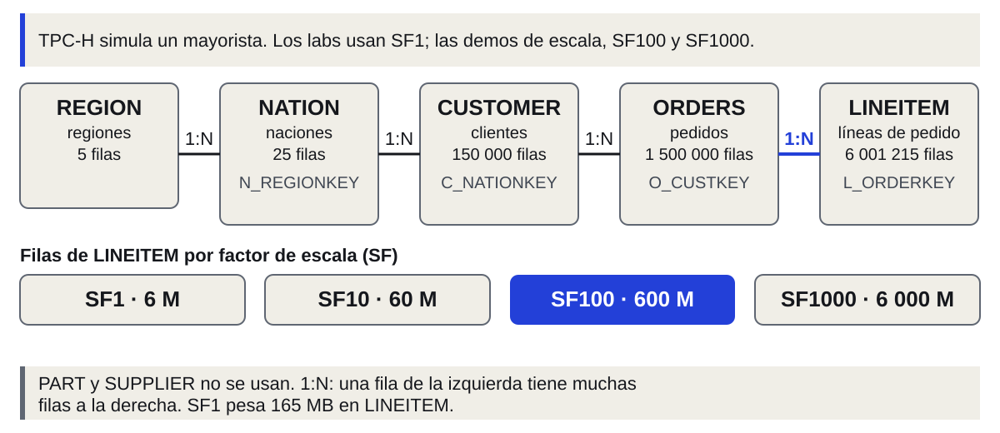
SF: factor de escala. LINEITEM: 6 M de filas en SF1; 600 M en SF100; 6 000 M en SF1000.
TPC-H es un banco de pruebas estándar de la industria, más grande que los datos de NYC. Simula un mayorista: clientes que hacen pedidos, pedidos con líneas, y clientes ubicados en naciones y regiones. Se explica una sola vez; el resto de la clase usa estos nombres. LINEITEM es la tabla de las líneas de cada pedido, la más grande. El factor de escala (SF) multiplica las filas: LINEITEM tiene 6 001 215 en SF1, 59 986 052 en SF10, 600 037 902 en SF100 y 5 999 989 709 en SF1000 (consulta propia, Snowflake, 3 nov. 2026). Los labs usan SF1 por rapidez; las demos de escala, SF100 y SF1000. Existen tres tablas más (PART, SUPPLIER, PARTSUPP). El curso no usa PART ni SUPPLIER, y usa PARTSUPP (los proveedores de cada pieza) solo en la slide 26, para el JOIN con llave incompleta. En el diagrama, 1:N quiere decir que una fila de la izquierda tiene muchas filas a la derecha. Lo que sigue: por qué LINEITEM se lee tan rápido.
Leer rápido exige resolver ocho problemas: síntoma con dato, idea de ingeniería y respuesta de Snowflake
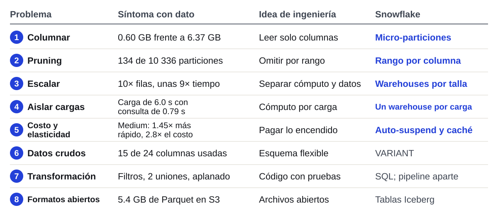
Warehouse: cómputo de Snowflake. X-Small: talla menor, 1 crédito (unidad de cobro) por hora.
Esta slide abre el bloque con la pregunta de la slide 3: ¿cómo lee un motor analítico tanto dato sin leerlo todo, y qué resuelve Snowflake? La respuesta corta es «leyendo menos». Los próximos minutos la descomponen en ocho problemas. Para cada uno se sigue el mismo recorrido: síntoma con un dato, idea de ingeniería, qué hace Snowflake (o por qué no lo resuelve) y, si hay medición, una demo. Lectura del mapa, fila por fila: columnar (0.60 GB contra 6.37 GB), pruning (134 de 10 336 micro-particiones), escala (10 veces más filas, unas 9 veces más tiempo), aislamiento, costo y elasticidad, datos crudos (15 de 24 columnas usadas), transformación (silver) y formatos abiertos (5.4 GB de Parquet). Los cuatro primeros dependen de cómo se guarda y se lee el dato; los cuatro últimos, de cómo se opera y se integra. Cinco los resuelve el motor; tres, el diseño del curso (slide 12). Las cifras de los síntomas 6 a 8 vienen de la clase 1 (clase 1, slides 4, 24 y 46); el resto, de las mediciones de hoy (medición propia, Snowflake, nov. 2026). Definiciones: un warehouse es el cómputo de Snowflake; X-Small es su talla menor y consume 1 crédito por hora; el crédito es la unidad de cobro (slide 9). Al final, una tabla compara los diseños de Snowflake, Redshift, BigQuery y Databricks SQL. Siguiente: el problema 1.
Solo se leen las columnas pedidas: 0.6 GB numérica, 6.4 GB texto, 16.6 GB todas
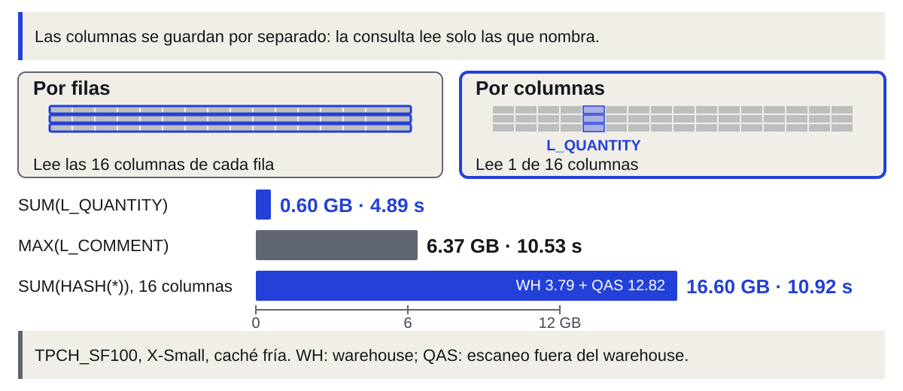
Problema 1 de 8: columnas. QAS: servicio que hace parte del escaneo fuera del warehouse (WH).
Problema 1, síntoma: la misma tabla de 600 M de filas lee 0.60 GB con una columna numérica (SUM(L_QUANTITY)) y 6.37 GB con un texto (MAX(L_COMMENT)). Leer las 16 columnas (SUM(HASH(*))) lee 16.60 GB: 3.79 GB en el warehouse y 12.82 GB en QAS (medición propia, Snowflake, nov. 2026). Idea de ingeniería: guardar cada columna por separado, de modo que la consulta lea solo las que nombra. En la clase 1 se definió (slide 21); hoy se mide. Snowflake: «only the columns referenced by a query are scanned» (documentación de Snowflake, tables-clustering-micropartitions). Por qué pesan distinto: L_QUANTITY tiene 50 valores distintos (1 a 50) y comprime muy bien; L_COMMENT es texto libre. El tamaño comprimido por columna no se midió más allá de estos totales. El tiempo no sigue a los bytes: L_COMMENT lee 10.6 veces más bytes que L_QUANTITY y tarda 2.2 veces más (4.89 s contra 10.53 s); la lectura de 16 columnas lee 2.6 veces más que L_COMMENT y tarda lo mismo (10.92 s). Con QAS activo, el servicio hace parte del escaneo fuera del warehouse; por eso los bytes del operador no son toda la lectura. Límite: reconstruir una fila completa toca todas las columnas; por eso SELECT * es el mal hábito de un motor columnar. LINEITEM tiene 16 columnas y ORDERS 9 (consulta propia, Snowflake, 3 nov. 2026). Demo 2 del guion de demos. Siguiente: leer menos filas, no solo menos columnas.
Para saltar filas, cada micro-partición guarda su rango; un mes lee 0.25 GB, no 19.2 GB
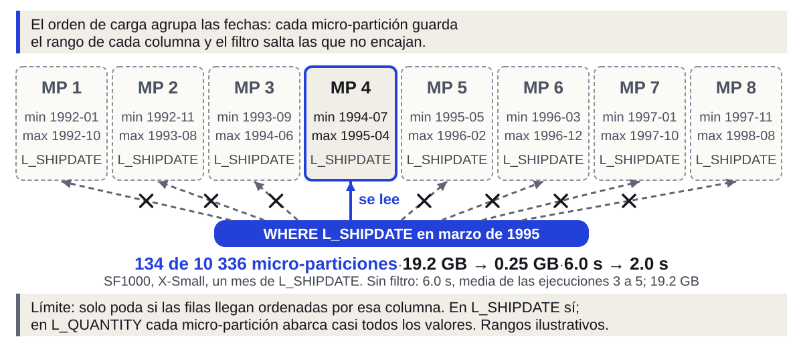
Problema 2 de 8. Micro-partición: bloque de 50–500 MB sin comprimir. Pruning (poda): omitir las descartadas.
Problema 2, síntoma: un mes de L_SHIPDATE en SF1000 lee 134 de 10 336 micro-particiones; con ese filtro, 2.0 s y 0.25 GB, frente a 19.2 GB sin filtro (medición propia, Snowflake, nov. 2026). Idea de ingeniería: guardar, por bloque de datos, el rango de valores de cada columna y saltar los bloques que el filtro no puede tocar. Snowflake divide cada tabla en micro-particiones de 50 a 500 MB sin comprimir y registra «the range of values for each of the columns» (documentación de Snowflake; la documentación no usa «mín/máx»: es nuestra lectura del mecanismo). «Podar» es omitir las micro-particiones que el filtro descarta; se usa ese verbo en todo el deck. Clustering natural (ordenar las filas al cargarlas): Snowflake crea las micro-particiones en el orden de carga. Si las filas llegan ordenadas por fecha, cada micro-partición cubre un rango corto y el filtro poda (documentación de Snowflake, tables-clustering-micropartitions). Medido con SYSTEM$CLUSTERING_INFORMATION en SF1000 (medición propia, Snowflake, nov. 2026): L_SHIPDATE tiene profundidad media 1.41 (cuántas micro-particiones se superponen en un mismo valor) y un mes lee 134 de 10 336; O_ORDERDATE, 1.84, y un mes lee 43 de 3 242; L_QUANTITY, 10 336: cada micro-partición abarca casi todos los valores y se solapa con todas las demás, así que `L_QUANTITY > 10` lee las 10 336. El operador reporta 1 742 con un scan_progress de 0.17; la lectura completa se confirma con SUM(L_EXTENDEDPRICE) (razón observada 0.9568626 contra 0.9568627 teórica). Límite: omite datos solo si la columna filtrada está agrupada. Además, «Snowflake does not prune micro-partitions based on a predicate with a subquery» (documentación de Snowflake): una razón para cuidar las subconsultas en la clase 3. Definir una clave de clustering y el reclustering automático consumen créditos (documentación de Snowflake, tables-clustering-keys); el orden de carga no tiene ese costo. Los rangos del diagrama son ilustrativos. Consulta de la demo 3 (antes slide 9), SF1000, X-Small: SELECT SUM(L_EXTENDEDPRICE) FROM SNOWFLAKE_SAMPLE_DATA.TPCH_SF1000.LINEITEM WHERE L_SHIPDATE >= '1995-03-01' AND L_SHIPDATE < '1995-04-01'; Se ejecuta primero sin la línea 3 (la del WHERE) y luego completa. Sin ella: 6.0 s y 19.2 GB. Con ella: 2.0 s y 0.25 GB. Demo 3 del guion de demos. Sin filtro: 6.0 s, media de las ejecuciones 3 a 5, y 19.2 GB (medición propia, Snowflake, nov. 2026). Las cinco ejecuciones midieron 5.46, 6.51, 5.91, 5.94 y 6.08 s, con 19.2 a 19.5 GB totales en las cuatro primeras. Misma cifra en D4 y en la slide 8. Con el mes de L_SHIPDATE: 2.03 s, 0.25 GB de warehouse y 134 de 10 336 micro-particiones (medición propia, Snowflake, nov. 2026); la medición no registró el estado de la caché en esa ejecución. Dos cautelas que se dicen en voz alta. Primera: en la lectura sin filtro el perfil reporta menos de 10 336 micro-particiones según la ejecución (QAS hace parte del escaneo); ese número es indicativo. Segunda: en SF100 el mismo filtro bajó los bytes de 1.83 a 0.06 GB y no el tiempo (0.63 s contra 0.79 s) (medición propia, Snowflake, nov. 2026), porque la consulta ya era corta frente al costo fijo de arrancar. El pruning se ve en los bytes; en el tiempo se ve sobre todo cuando la tabla es grande. COUNT(*) (antes slide 10): Demo 4 del guion de demos, con dos consultas seguidas. Sin filtro: 0.06 s y 0 bytes, solo con metadatos (medición propia, Snowflake, nov. 2026). El motor cuenta filas sin abrir datos porque guarda metadatos por micro-partición (documentación de Snowflake: rango de valores, número de valores distintos y otras propiedades). Que el conteo sin filtro se resuelva con esos metadatos lo muestra la medición; la documentación no lo afirma. Leer L_QUANTITY con SUM sí abre la columna: SUM(L_QUANTITY) lee 0.60 GB y tarda 4.89 s en frío (medición propia, Snowflake, nov. 2026). La variante con COUNT no se repitió en la medición definitiva; su cifra previa (0.87 s y 0.48 GB) no se muestra porque choca con ella. Esto no es la caché de resultados (slide 11): aquí no hubo ejecución previa. El conteo con metadatos no usa warehouse: lo atienden los servicios de nube, que se cobran solo por lo que excede el 10 % del cómputo diario de los warehouses (documentación de Snowflake, cloud services); por eso no se muestra costo en créditos. El resultado exacto, 600 037 902, es el número de filas de SF100 (consulta propia, Snowflake, 3 nov. 2026). Cifra para recordar: 0.06 s y 0 bytes sobre 600 M de filas. Tiempo: 4 min de mecanismo y diagrama, 3 de demo 3, 3 de COUNT(*) y preguntas. Siguiente: qué pasa cuando la tabla crece 10 veces.
Con el mismo warehouse, 10 veces más filas son unas 9 veces más espera: hay que sumar cómputo
Problema 3, síntoma: con 10 veces más filas, la misma consulta tarda unas 9 veces más en X-Small: 0.65 s en SF100 (media de las ejecuciones 2 y 3, caché caliente) y 6.0 s en SF1000 (media de las ejecuciones 3 a 5) (medición propia, Snowflake, nov. 2026). 6.0 / 0.65 = 9.2. La consulta es SUM(L_EXTENDEDPRICE) sobre cada LINEITEM (demo 5 del guion de demos). Los GB totales son 1.83 y 19.2 (GB del warehouse más GB de QAS); la razón de bytes, 10.5, queda cerca de la razón de filas. Límites de la medición: SF1000 no llegó a caché caliente (como máximo 85 % en el warehouse; el resto lo hizo QAS), así que el 9 es aproximado. En frío: 2.50 s contra 5.46 s (2.2 veces), pero esas dos ejecuciones no comparten volumen en caché. La medición previa de SF1 (0.25 s) no se repitió en la medición definitiva y no se muestra. Idea de ingeniería: si crecer en datos y crecer en cómputo van juntos (clase 1, slide 25), cada crecimiento es una compra; hay que separarlos. Conclusión: escala casi lineal en datos y en tiempo, con esas dos reservas. Lectura que engancha con la slide 9: con el mismo warehouse, 10 veces más datos es casi 10 veces más espera; para mantener el tiempo hay que sumar cómputo. Siguiente: cómo separa Snowflake los datos del cómputo.
Para sumar cómputo sin tocar los datos, Snowflake separa almacenamiento, cómputo y servicios de nube
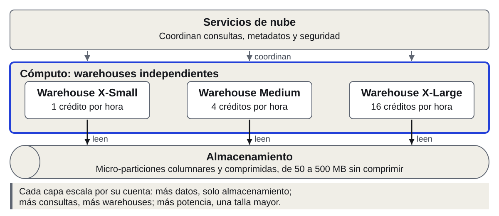
Problema 3 de 8. De X-Small (1 crédito por hora) a 6X-Large (512 créditos por hora).
Cómo lo resuelve Snowflake: tres capas. Almacenamiento: tablas en micro-particiones columnares y comprimidas, sobre almacenamiento en la nube. Cómputo: «a virtual warehouse is a cluster of compute resources», independiente de los demás. Servicios de nube: «a collection of services that coordinate activities across Snowflake» (documentación de Snowflake, intro-key-concepts); coordinan, por ejemplo, los metadatos y la planificación de las consultas. Cada talla duplica los créditos por hora: X-Small 1, Small 2, Medium 4, Large 8, X-Large 16, hasta 6X-Large con 512 (documentación de Snowflake, warehouses-overview). Crecer en datos engorda la capa de abajo; crecer en consultas o en potencia, la del medio. Límite: más cómputo no reduce lo que hay que leer (problema 5). Siguiente: qué se gana al tener varios warehouses sobre un mismo almacenamiento.
Con cómputo separado, varios warehouses leen los mismos datos y una carga pesada no frena a las demás
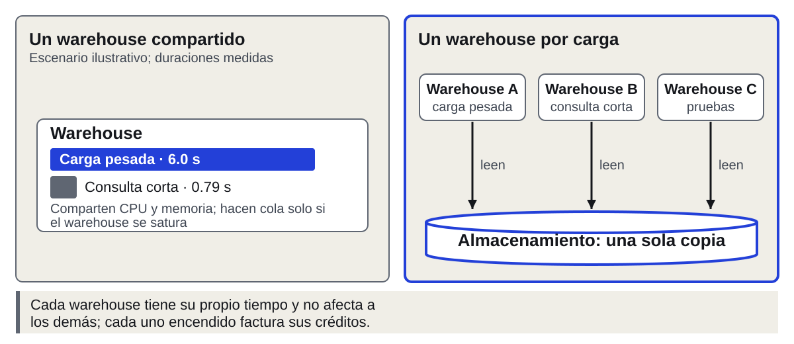
Problema 4 de 8: aislamiento. Cada warehouse encendido factura sus propios créditos.
Problema 4, síntoma: una carga pesada de 6.0 s sobre LINEITEM en SF1000 y una consulta corta de 0.79 s sobre LINEITEM en SF100 (medición propia, Snowflake, nov. 2026) compiten en un warehouse compartido. En ese warehouse las consultas simultáneas comparten CPU y memoria, y hacen cola solo cuando el warehouse se satura (documentación de Snowflake, warehouses-overview). El panel izquierdo es un escenario ilustrativo: no hay medición de contención. Idea de ingeniería: un cómputo por carga, todos sobre una sola copia de los datos. Snowflake: «each virtual warehouse has no effect on the performance of other virtual warehouses», y todos leen el mismo almacenamiento (documentación de Snowflake). Límite: el aislamiento es de cómputo, y cada warehouse encendido cobra por separado. No hay demo, porque no hay cifra medida de contención. Siguiente: cuánto cuesta ese cómputo y qué compra una talla mayor.
Medium fue 1.45 veces más rápido que X-Small y costó 2.8 veces más por consulta
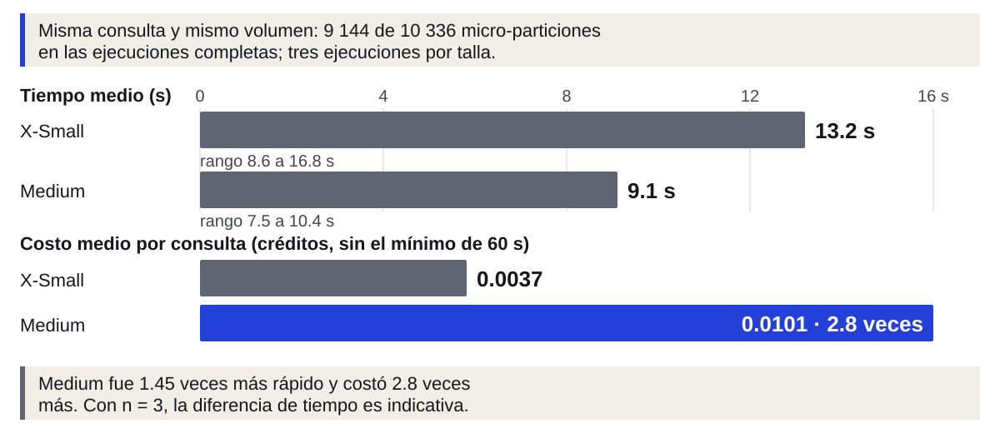
Problema 5 de 8. Caché de resultados, consulta repetida: 2.14 s, luego 0.05 s y 0 bytes.
Problema 5, costo y elasticidad, síntoma: 19 consultas de la medición sumaron 74.6 s de ejecución y 0.0207 créditos en X-Small. Una sola reanudación cobra al menos 0.0167 créditos en X-Small y 0.0667 en Medium: es un cálculo con la regla de la documentación (60 s mínimos a 1 y a 4 créditos por hora), no una medición. Idea de ingeniería: pagar por tiempo de cómputo encendido y apagar lo que no se usa. Snowflake: «per-second billing (with a 60-second minimum each time the warehouse starts)»; auto-suspend y auto-resume vienen activados por defecto (documentación de Snowflake). En el Lab 1 el warehouse se creó con AUTO_SUSPEND = 60. Límite: el tiempo ocioso antes de suspender también se factura, y cada reanudación paga el mínimo. El diagrama de la línea de tiempo del auto-suspend (D7 del deck de 64) no se proyecta; sus cifras están arriba (0.0167 créditos por arranque mínimo en X-Small, 0.0667 en Medium, 0.0207 créditos en 19 consultas y 74.6 s). Demo 6 del guion de demos: se ejecuta la misma consulta en las dos tallas (SF1000, tres ejecuciones cada una) y se abre el Query Profile. Medido: X-Small 14.26, 16.84 y 8.56 s (media 13.2 s; 0.0037 créditos por consulta); Medium 10.43, 9.45 y 7.47 s (media 9.1 s; 0.0101 créditos) (medición propia, Snowflake, nov. 2026). Medium fue 1.45 veces más rápido y costó 2.8 veces más. Con n = 3 y una dispersión de 2 veces dentro de X-Small, la diferencia de tiempo es solo indicativa. En las ejecuciones completas, las dos tallas leyeron 9 144 de 10 336 micro-particiones. Cuándo ayuda la talla: cuando la consulta tiene trabajo que se reparte entre más nodos (el escaneo en paralelo) y cuando hay spilling, es decir, cuando los datos intermedios no caben en memoria y se escriben a disco. En el Query Profile aparece como «Bytes spilled to local storage» o «Bytes spilled to remote storage» (documentación de Snowflake, query profile). Aquí no hubo spill real: solo aparece un remoto de fondo, de 31 a 44 KB, que sale también en consultas triviales (medición propia, Snowflake, nov. 2026). Esta cuenta tiene Query Acceleration Service (QAS) activo: QAS hace parte del escaneo fuera del warehouse, por eso los bytes del operador no cuentan toda la lectura. Costo: créditos sin el mínimo de 60 s por reanudación; X-Small consume 1 crédito por hora y Medium 4. Caché de resultados (antes slide 16; título: «La misma consulta repetida sale del caché de resultados: 2.14 s la primera vez, 0.05 s la segunda y 0 bytes»). Demo 7: ALTER SESSION SET USE_CACHED_RESULT = TRUE; y la consulta SELECT L_SHIPMODE, COUNT(*), SUM(L_EXTENDEDPRICE) FROM SNOWFLAKE_SAMPLE_DATA.TPCH_SF100.LINEITEM GROUP BY 1; ejecutada dos veces. La caché queda en TRUE hasta la demo 8 (slide 17). Caché de resultados (24 h): texto idéntico, datos sin cambios, rol con privilegios. Caché local (SSD del warehouse): se pierde al suspender. Medido: primera ejecución 2.14 s y 2.07 GB por operador; segunda, 0.05 s, 0 bytes y 0 micro-particiones (medición propia, Snowflake, nov. 2026). Son dos cachés distintas. La de resultados vive en los servicios de nube: reutiliza el resultado si el texto es idéntico, los datos no cambiaron y el rol tiene los privilegios. Dura 24 horas, con renovación en cada reutilización, y 31 días como tope (documentación de Snowflake, querying-persisted-results). Como dice la documentación, «meeting all these conditions does not guarantee that Snowflake reuses the query results». La local está en el SSD de los nodos del warehouse, guarda datos ya leídos y se pierde al suspender el warehouse; por eso el auto-suspend también la borra (documentación de Snowflake, performance-query-warehouse-cache). Cualquier cambio en el texto, la tabla o el rol invalida la de resultados. Esta consulta reaparece en la slide 17 (GROUP BY 1). La caché local es la que significa «en caliente» en la slide 3. Tiempo: 3 min de cobro y auto-suspend, 4 de demo 6 (X-Small contra Medium), 2 de caché local y demo 7. Siguiente: cuáles de los ocho problemas quedan resueltos. El auto-suspend (apaga el warehouse sin consultas) y el mínimo de 60 s por arranque no caben en el pie: se dicen de viva voz.
Snowflake resuelve cinco problemas; los otros tres son decisiones del curso
Puede, con SQL o Snowpark
Clases 5-6: Spark y Airflow
Tiempo: 1 min de balance y 2 min por cada uno de los problemas 6, 7 y 8, que aquí aparecen como una fila cada uno y se cuentan de viva voz (D9 y D10 del deck de 64 sirven de material de lectura). Balance contra los ocho problemas. Los tres últimos no son limitaciones de Snowflake: puede guardar JSON en VARIANT, ejecutar SQL de transformación (y PySpark con Snowpark Connect) y crear tablas Iceberg. Lo que el curso decide es dónde vive cada pieza. Las cifras de los síntomas (15 de 24 columnas, JSON anidado; filtros, 2 uniones y aplanado; 5.4 GB de Parquet) están en la slide 5 y se repiten en la slide 30. El motor resuelve columnar, pruning, escala, aislamiento y pago por segundo (en el deck de 64, la columna Motor de D2: Columnas, Pruning, Escala, Aislamiento y Pago por segundo). El costo, sin embargo, sigue dependiendo de cuántos datos lee la consulta (slides 6, 7 y 11). Crudos (VARIANT sí, formato abierto no), transformación con pruebas y formatos abiertos los cubre la arquitectura del curso: lake en S3 en la clase 4, Spark y Airflow en las clases 5 y 6. Es el mismo criterio de la clase 1: cada pieza existe por un requisito. Lo siguiente compara estos cinco puntos con otros tres motores. VARIANT (antes slide 17; título: «VARIANT guarda el JSON del clima sin esquema fijo, pero el crudo queda en el almacenamiento y el formato de Snowflake»; pie: «FHVHV: 24 columnas, 15 usadas; el clima llega anidado en daily»). Problema 6, síntoma: de las 24 columnas de FHVHV el pipeline usa 15, y el JSON de Open-Meteo trae arreglos dentro de daily (clase 1, slides 24 y 3). Idea de ingeniería: guardar el crudo como llegó y decidir el esquema al leer. Snowflake: «a VARIANT can hold a value of any other data type, including an ARRAY or an OBJECT», y el JSON cargado se convierte a un formato interno con VARIANT, ARRAY y OBJECT (documentación de Snowflake, semistructured-intro). Límite: el dato queda dentro del almacenamiento gestionado de Snowflake y en su formato propietario (documentación de Snowflake). Para guardar el crudo en archivos abiertos, con cualquier motor encima, el curso usa el lake en S3 (clase 4). No hay demo: no se midió. Transformación (antes slide 18; título: «Snowflake puede ejecutar filtros, 2 uniones y aplanado de silver; el curso los escribe como código con pruebas»). Problema 7, síntoma: silver filtra por distancia, tarifa, duración, empresa y nulos, une el viaje con zona y clima por dos claves y aplana el JSON del clima (clase 1, auditoría: silver.py:31-123). Idea de ingeniería: cada paso con entrada y salida definidas, reglas que fallan en voz alta, idempotente y repetible por mes. No es una limitación de Snowflake: puede ejecutar SQL de este tipo y, con Snowpark Connect, el mismo PySpark. Se probó que gold sale idéntico en Glue y en Snowpark Connect; esa comparación es un laboratorio de la clase 7 (repositorio del curso: TRASPASO.md, decisiones 2026-11-01). Lo que el curso decide aparte son las pruebas (clase 5), el reproceso y el orden (clase 6). Hoy, en SQL, se hacen las uniones y agregaciones de los labs. Formatos abiertos (antes slide 19; título: «Las tablas nativas usan formato propio; las Iceberg guardan Parquet, administradas por Snowflake o en el bucket del cliente»; pie: «Sin Fail-safe en el bucket del cliente»). Problema 8, síntoma: el crudo de 2024 son 5.4 GB de Parquet en archivos que cualquier motor lee (clase 1, slide 4); una tabla nativa los reescribe en micro-particiones propias. Idea de ingeniería: formatos abiertos de datos y de tabla, para no atar el dato a un motor. Snowflake: «supports Iceberg tables that use the Apache Parquet file format», administradas por Snowflake en su almacenamiento, en un bucket del cliente (S3, GCS o Azure) o administradas externamente (documentación de Snowflake, tables-iceberg). Límite: sin Fail-safe en el bucket del cliente. Decisión del curso: lake más warehouse, no lakehouse (clase 1, slide 47).
Los otros motores también omiten datos; cambia el cobro: tiempo encendido o bytes leídos
Rango por micro-partición
Puente: el motor se practica en Snowflake; antes del Lab 1, un chequeo de la cuenta AWS (slide 14). Redshift es el almacén de datos de AWS; BigQuery, el de Google; Databricks SQL es el motor SQL de Databricks. En BigQuery, «on-demand» cobra los bytes leídos; la modalidad por capacidad cobra slots por tiempo. Cobro en detalle (la pantalla dice solo tiempo o bytes): Snowflake, créditos por segundo; Redshift, nodo-hora o RPU-hora; BigQuery, bytes (on-demand) o slots (capacidad); Databricks SQL, DBU. «Tiempo» es tiempo encendido. Del deck de 64 se quitan de pantalla las columnas Aísla, Pausa y Formato abierto. Aislamiento: Snowflake, warehouses; Redshift, data sharing; BigQuery, reservas; Databricks SQL, «—» (la documentación no lo afirma de forma explícita). Pausa: Snowflake, auto-suspend; Redshift, pausa manual (provisioned); BigQuery, sin clúster; Databricks SQL, Auto Stop. Formato abierto: Snowflake, Iceberg; Redshift, Spectrum e Iceberg; BigQuery, Iceberg; Databricks SQL, Delta y UniForm. Las siglas RPU, DBU y slot se explican solo en estas notas. Cómputo de cada motor (documentación oficial de cada motor): Snowflake, warehouses de X-Small a 6X-Large; Redshift, nodos RA3 o RPU; BigQuery, slots; Databricks SQL, warehouses. Snowflake cobra créditos por segundo con mínimo de 60 s y auto-suspend activado por defecto. Redshift: nodo-hora en provisioned y RPU-hora en Serverless (por segundo, mínimo 60 s); data sharing aísla lecturas sobre una copia de los datos, y la pausa manual o programada suspende el cobro de cómputo. BigQuery: on-demand cobra los bytes que procesa cada consulta, y capacidad cobra los slots asignados en el tiempo; las reservas separan, por ejemplo, pruebas de producción, y no hay clúster que pausar. Databricks SQL: warehouses clásico, pro y serverless, con la DBU como unidad de cobro; varios warehouses leen las mismas tablas Delta, con Auto Stop mínimo de 10 minutos en pro y clásico y de 5 en la UI de serverless (documentación oficial de cada motor). Consecuencia para las slides 6 a 8 y 11: en BigQuery on-demand, los bytes leídos son directamente el costo; en los demás, lo es el tiempo encendido. No hay precios, solo el modelo de cobro. Siglas: DBU (Databricks Unit) es la unidad de cobro de Databricks; slot es la unidad virtual de cómputo de BigQuery; RPU (Redshift Processing Unit) es la unidad de capacidad de Redshift Serverless, con 16 GB de memoria cada una; data sharing comparte datos entre clústeres de Redshift sin copiarlos. La celda de aislamiento de Databricks SQL queda en «—» porque no se encontró una afirmación explícita en la documentación. Sin verificar y por eso ausentes: la pausa de Redshift Serverless y el aislamiento explícito entre warehouses de Databricks. Omisión de datos y formatos abiertos (antes slide 22; título: «Los cuatro omiten datos con metadatos; Databricks expone Delta como Iceberg con UniForm»). Snowflake: rango de valores por columna en cada micro-partición. Redshift: zone maps (mínimo y máximo por bloque de 1 MB) y sort keys. BigQuery: particiones por tiempo o entero y clustering por columnas. Databricks: estadísticas por archivo (mínimo, máximo, nulos) y liquid clustering de hasta cuatro claves. Siglas: zone map es el mínimo y máximo de cada columna por bloque de 1 MB; Spectrum es la capacidad de Redshift para consultar datos en S3; UniForm expone una tabla Delta a clientes Iceberg sin reescribir los archivos Parquet. Formatos abiertos: Snowflake y BigQuery con tablas Iceberg (Parquet) en el bucket del cliente, Redshift con Spectrum e Iceberg en S3 y Databricks con Delta (Parquet más log de transacciones) expuesto a clientes Iceberg con UniForm (documentación oficial de cada motor). No se afirma dónde vive el almacenamiento gestionado de Databricks (no verificado). Tiempo: 3 min de cobro y aislamiento, 2 de omisión de datos y formatos. Siguiente: pausa de AWS antes del Lab 1.
Las clases 4 a 6 corren en AWS: verifica tu cupo
Bootstrap: crea los recursos de AWS del curso.
Necesita cuatro cuotas (paso 2.2 de la guía).
Si falta cupo: Request increase (paso 2.3).
Rojo: Lab 1. Verde claro: bootstrap hecho.
Tiempo (15 min): 2.5 de semáforo y pregunta de la parada, 2.5 de cuotas, 4.5 de revisión en CloudShell y 5.5 de solicitud; el resto es trabajo individual con el instructor. Pantalla (versión llana): el bootstrap es un script que crea de una vez los recursos de AWS del curso; necesita cuatro cuotas, que son límites de uso por cuenta; si falta cupo, se pide un aumento. Sin CloudShell, vCPU ni nombres de cuotas en pantalla: están en esta nota. Por qué esta parada va antes del Lab 1: el motor ya está explicado y las clases 4 a 6 corren en AWS; la cuenta tiene que estar lista para entonces. Pregunta de la parada (antes slide 23): ¿qué cuotas de tu cuenta de AWS deciden si el bootstrap y el Code Editor arrancan? Una cuota es un límite de uso que AWS fija por cuenta. El bootstrap es el paso que crea de una vez los recursos base de la cuenta. Esta parada sirve a quien ya recibió el correo de verificación de AWS. En cuentas nuevas, AWS suele dejar algunas cuotas en 0 aunque el valor por defecto sea mayor, y entonces el bootstrap o el Code Editor fallan (repositorio del curso: docs/guia.md, paso 2.2). Quien tenga el color rojo no pierde contenido: empieza el Lab 1 desde ya (slide 15). Semáforo (antes slide 24), una sola regla, la del deck de 64: Rojo, en verificación, empieza el Lab 1; Amarillo, verificada, pide cuotas; Verde claro, bootstrap hecho, pasos 5 a 9 de la guía; Verde, pasos 5 a 12, retos ★★. Todos hacen el Lab 1 en Snowsight. Es la tabla del semáforo de la clase 1 (repositorio del curso: curso/clase01/cuentas.md, «Después de clase»). Rojo: cuenta creada y en verificación, sin nada que hacer en AWS porque CloudShell sigue bloqueado. Amarillo: cuenta verificada y cuotas por pedir o pendientes. Verde claro: cuotas aprobadas y bootstrap hecho; siguen los pasos 5 a 9 de la guía (con el Lab 1 en paralelo). Verde: pasos 5 a 12 completos. La regla de la clase 1 se mantiene: sin bloque de AWS listo no se pierde contenido. Las cuatro cuotas (antes slide 25; mínimo): SageMaker, Studio user profiles, 1; SageMaker, CodeEditor Apps en ml.t3.large, 1; SageMaker, Total domains, 1; EC2, Running On-Demand Standard, 2 vCPU. Son las cuatro cuotas del paso 2.2 (repositorio del curso: docs/guia.md, tabla del paso 2.2). Fallan, respectivamente, el bootstrap (StudentUserProfile: ServiceLimitExceeded), el Run space del Code Editor, el bootstrap (SageMakerDomain) y `make airflow-habilitar` (la VM de Airflow de prod). Las de SageMaker se piden en cuentas nuevas; la de EC2 normalmente ya alcanza con 8 vCPU. Los nombres de la pantalla son abreviaturas: el nombre exacto está en la guía y el comando de la slide siguiente ya los busca. Glue no necesita pedirse. Revisión (antes slide 26; abre CloudShell en us-east-2, la terminal de la consola de AWS; pasos: abre CloudShell, ícono >_, en us-east-2; pega el comando del paso 2.2 de docs/guia.md; cada valor mayor o igual al mínimo; si dice «verification is in progress», espera el correo). El instructor proyecta docs/guia.md en el paso 2.2 y muestra dónde está el bloque de comando. Salida esperada, con valores de ejemplo: Maximum number of Studio user profiles allowed per account 2.0; Studio CodeEditor Apps running on ml.t3.large instances 6.0; Total domains 2.0; Running On-Demand Standard 8.0. Si CloudShell responde «Your account verification is in progress», AWS sigue verificando la cuenta: no se puede usar CloudShell ni lanzar el bootstrap hasta que llegue el correo (docs/problemas.md, p-cloudshell-verificacion). Opción manual: Service Quotas > AWS services > el servicio > columna «Applied account-level quota value». Solicitud (antes slide 27; pasos: Service Quotas > servicio > cuota > Request increase; escribe el valor por defecto, Code Editor: 6; estado en Quota request history; si es un caso, responde con tu caso de uso). El formulario no acepta menos que el valor por defecto: para Code Editor en ml.t3.large exige 6 aunque se use 1 (repositorio del curso: docs/guia.md, paso 2.3). Algunas solicitudes se aprueban en minutos y otras se vuelven un caso en Support > Your support cases; ahí se responde con el caso de uso (curso universitario de Big Data, una app de Code Editor en ml.t3.large en us-east-2, apagada cuando no se usa). Pedir un aumento no cuesta: la cuota es un límite, y AWS solo cobra lo que corre. Si el bootstrap ya había fallado por una cuota, antes de relanzarlo hay que borrar el stack bigdata-bootstrap y el bucket de estado (paso 2.3, punto 7). Este tiempo es de trabajo individual; el instructor atiende casos. Bootstrap, para el bloque de cierre (antes slides 63 y 64). Paso 4.1, desde el fork: pestaña Actions, «Enlace de bootstrap», Run workflow, abrir el run que lanzaste y pulsar Launch Stack, que abre la consola de AWS. Solo para quien tiene las cuatro cuotas en el mínimo o más (repositorio del curso: docs/guia.md, paso 4.1). CloudFormation es el servicio que crea los recursos desde una plantilla; el stack es el conjunto creado. Quien no tiene cuotas todavía espera el correo de AWS y vuelve a esta slide (paso 2.3); no pierde contenido de las clases 3 y 4. Paso 4.2, en la consola de AWS: VpcId, la VPC default; SubnetIds, todas sus subnets; AlertEmail, tu correo; marcar la casilla IAM y pulsar Create stack; esperar de 3 a 4 min hasta que bigdata-bootstrap llegue a CREATE_COMPLETE. Los datos de GitHub ya vienen completados: no se cambian (repositorio del curso: docs/guia.md, paso 4.2). Salida esperada: en CloudFormation > bigdata-bootstrap, el estado CREATE_COMPLETE. Si falla, docs/problemas.md tiene EntityAlreadyExists y «el bootstrap falló por una cuota» (borrar el stack y el bucket antes de relanzar). Cierre de la sesión: quien termina el bootstrap sigue con los pasos 5 a 9 de la guía por su cuenta. Verde claro (bootstrap hecho) sigue en los pasos 5 a 9 de la guía; Verde, en los pasos 5 a 12.
Lab 1: tus primeras consultas sobre TPC-H
Copy raw file de lab1.sql; corre el Paso 0 con ▶, no con Run All.
EJ1 a EJ6: reemplaza SELECT NULL.
EJ6: abre el Query Profile (plan ejecutado).
Otra hoja: lab1_verificacion.sql, Run All.
Paso 0: se selecciona de USE ROLE a USE SCHEMA y se pulsa ▶. EJ6: Query Details > ⋯ > View Query Profile. La meta es 6 de 6 verificados. En el EJ6 se anotan también las filas de TableScan, el paso que lee la tabla (ver el lab). Tiempo (45 min): 12 de presentación (0.5 + 3 + 3 + 3 + 2.5) y 33 de trabajo individual; esta slide queda proyectada. La única ayuda es el instructor. Presentación del lab (antes slide 28; pregunta: ¿cómo se le pregunta a una tabla? Tus primeras consultas SQL sobre TPC-H). Hasta aquí se explicó cómo lee un motor; ahora se le pregunta. El Lab 1 usa TPC-H SF1 (CUSTOMER, ORDERS, NATION, REGION) con SELECT, WHERE, ORDER BY, LIMIT, COUNT y SUM, y termina con el Query Profile. Los ejercicios son vistas EJ1 a EJ10 y una verificación dice cuáles están bien. Copia (antes slide 29; pasos: abre tu fork > curso > clase02 > lab1.sql; pulsa Copy raw file, el de los dos cuadritos, no la flecha; si no ves el archivo, Sync fork > Update branch). Es el procedimiento de la cabecera de lab1.sql (repositorio del curso: curso/clase02/lab1.sql, «Cómo copiar este archivo a Snowsight»). Copy raw file copia solo el texto del código; la flecha hacia abajo descarga el archivo, que aquí no sirve. Si el archivo no aparece, el fork no tiene los últimos cambios: Sync fork > Update branch. Salida esperada: el portapapeles contiene todo el archivo, de «LAB 1 · Tu primer SQL sobre TPC-H» hasta «Siguiente en esta sesión». Snowsight (antes slide 30; pasos: Projects > Worksheets > + SQL Worksheet; pega todo el archivo; selecciona de USE ROLE a USE SCHEMA y pulsa ▶; corre cada ejercicio con Cmd o Ctrl + Enter). El Paso 0 elige el rol ACCOUNTADMIN y el warehouse COMPUTE_WH (XSMALL, AUTO_SUSPEND = 60), y crea la base CURSO y el esquema CURSO.LAB1. No se elige rol ni warehouse en el selector de Snowsight. Salida esperada: «Statement executed successfully» en cada línea. Si Snowsight muestra «Workspaces» en vez de Worksheets, se usa + > SQL File. Run All no se usa en este archivo, porque correría todos los ejercicios sin resolver; el Paso 0 lo elige todo por ti. Verificación (antes slide 31): la meta es RESUMEN con 6 de 6. OK: mismas filas y valores, sigue. REVISAR: existe pero no coincide, lee la PISTA. PENDIENTE: marcador sin resolver, escribe tu SELECT. La verificación (lab1_verificacion.sql) compara las vistas EJ1 a EJ10 contra la respuesta esperada con HASH_AGG y devuelve una fila por ejercicio y una de resumen (repositorio del curso: curso/clase02/lab1_verificacion.sql). REVISAR muestra TUS_COLUMNAS y COLUMNAS_ESPERADAS para comparar nombres. PENDIENTE en EJ7 a EJ10 es normal si no se hicieron los ★★. Si dice PENDIENTE pero se escribió el SELECT, el CREATE falló: hay que buscar el mensaje rojo. Se corre en otra hoja, con Run All, tantas veces como se quiera. Plantilla del ejercicio (antes slide 32; código: CREATE OR REPLACE VIEW EJ1 AS, marca «BORRA la línea de abajo y escribe aquí tu SELECT», SELECT NULL AS PENDIENTE, marca de cierre, punto y coma, SELECT * FROM EJ1). Una vista guarda la consulta con un nombre fijo, y la verificación abre EJ1 a EJ10 y compara su resultado. Plantilla común de los diez ejercicios (repositorio del curso: lab1.sql): se borra solo la línea 3 y se escribe el SELECT; el punto y coma queda donde está. Hay dos AS distintos: el de CREATE VIEW ... AS une el nombre de la vista con la consulta, y el de SELECT ... AS nombra una columna. Un COUNT(*) o SUM sin AS dentro de la vista da «Missing column specification»: se agrega AS NOMBRE. Los nombres de las columnas de salida son parte del ejercicio. Trabajo (antes slide 33; pasos: resuelve EJ1 a EJ6 (★); en el EJ6, abre el Query Profile (el plan ejecutado) y anota las filas de TableScan; con tiempo, ★★ y ★★★; en otra hoja, lab1_verificacion.sql con Run All, meta 6 de 6). Esta slide queda proyectada mientras se trabaja. El núcleo son los seis ★. El EJ6 conecta con el bloque 2: el TableScan de ORDERS muestra cuántas filas leyó la consulta, la misma lectura que se hizo en las demos. Si se repite una consulta idéntica, sale de la caché de resultados y el perfil no muestra filas leídas: hay que cambiar el filtro. Para releer el perfil de una consulta ya ejecutada, antes `ALTER SESSION SET USE_CACHED_RESULT = FALSE;` y después volver a correrla. El instructor circula por los casos REVISAR. A los 25 minutos de trabajo se recuerda correr la verificación. Siguiente: descanso y, después, resumir por grupo.
Hasta aquí, cada consulta devolvió filas o un solo número. ¿Cómo se resume por grupo y en qué orden se evalúa una consulta?
Durante el descanso el instructor deja abierta la hoja de demos con COMPUTE_WH. La caché de resultados queda en TRUE por la demo 7 (notas de la slide 11), y la consulta GROUP BY 1 de la slide 17 saldrá de ahí. Quien no terminó los seis ★ del Lab 1 puede seguir; la verificación queda disponible hasta el final de la clase.
GROUP BY resume por grupo: WHERE filtra filas antes y HAVING filtra grupos después
SELECT O_CUSTKEY, COUNT(*) AS PEDIDOS
FROM SNOWFLAKE_SAMPLE_DATA.TPCH_SF1.ORDERS
WHERE O_ORDERDATE >= '1995-01-01' AND O_ORDERDATE < '1996-01-01'
GROUP BY O_CUSTKEY
HAVING COUNT(*) >= 8
ORDER BY PEDIDOS DESC, O_CUSTKEY
LIMIT 5;
GROUP BY agrupa por cliente; COUNT(*) cuenta pedidos por grupo. WHERE (activa la poda, slide 7) deja 228 637 pedidos de 1995; HAVING, los 622 clientes con 8 o más.
Apertura (antes slide 35): hasta el Lab 1, cada consulta devolvía filas de la tabla o un solo número. Los informes de negocio piden un resumen por grupo, y para escribirlo bien hay que saber en qué orden razona el motor. Todo el bloque se apoya en la consulta GROUP BY 1, ya ejecutada en la demo 7 (notas de la slide 11). Primer ejemplo de GROUP BY (antes slide 36; título: «GROUP BY reduce 600 M de líneas a 7 filas, una por modo de envío»), SF100: SELECT L_SHIPMODE, COUNT(*), SUM(L_EXTENDEDPRICE) FROM SNOWFLAKE_SAMPLE_DATA.TPCH_SF100.LINEITEM GROUP BY 1; Se vuelve a ejecutar la consulta de la demo 7: ahora sale de la caché (0.05 s); su primera ejecución midió 2.14 s y devolvió 7 filas, una por modo de envío (medición propia, Snowflake, nov. 2026). Enlace con la slide 7: WHERE es el filtro que activa la poda; en SF1, el TableScan de ORDERS lee 10 de 10 micro-particiones (el filtro de fecha no poda, demo 8). Qué hace GROUP BY: separa las filas por el valor de la columna y aplica las funciones de agregación (contar, sumar) a cada grupo; la salida tiene una fila por valor distinto. GROUP BY 1 es la posición de la columna en el SELECT; en los labs se escribe el nombre. En los ejercicios, cada columna de salida se nombra con AS, porque la vista lo exige. Demo 8, la consulta de la slide (antes slide 37): Demo 8 del guion de demos, en SF1. Ejecutada el 2026-11-03: 228 637 pedidos en 1995 de 86 573 clientes distintos; 622 con 8 o más pedidos; los cinco primeros son 63733, 107440, 115471 y 120877 (12 pedidos cada uno) y 14920 (11) (consulta propia, Snowflake, 3 nov. 2026). Con el filtro de fecha se descartan filas antes de agrupar; con HAVING se descartan grupos ya calculados. Es la misma idea de la consulta de la clase 1 sobre gold, que agrupaba por FECHA. WHERE contra HAVING (antes slide 39; título: «WHERE filtra filas y no admite agregaciones; HAVING filtra grupos y sí las admite»). WHERE se evalúa antes de GROUP BY, filtra filas y no admite agregaciones; HAVING se evalúa después, filtra grupos y sí las admite. Demo 9 del guion de demos: se ejecuta SELECT O_CUSTKEY, COUNT(*) FROM ORDERS WHERE COUNT(*) > 8 GROUP BY O_CUSTKEY. Snowflake responde «SQL compilation error: Invalid aggregate function in where clause [COUNT(*)]» (consulta propia, Snowflake, 3 nov. 2026). Regla práctica: si la condición menciona una columna de la tabla, va en WHERE; si menciona un resultado de COUNT, SUM o AVG, va en HAVING. Poner en WHERE todo lo que se pueda es además más barato, porque reduce lo que se agrupa. Error de columna fuera de GROUP BY (antes slide 40; título: «Una columna del SELECT debe estar en GROUP BY o dentro de una agregación; si no, la consulta falla»). Consulta: SELECT C_MKTSEGMENT, C_NAME, COUNT(*) FROM SNOWFLAKE_SAMPLE_DATA.TPCH_SF1.CUSTOMER GROUP BY C_MKTSEGMENT; Snowflake responde que 'CUSTOMER.C_NAME' in select clause is neither an aggregate nor in the group by clause; un segmento agrupa miles de nombres. Demo 10 del guion de demos: el error literal es «SQL compilation error: error line 1 at position 21 'CUSTOMER.C_NAME' in select clause is neither an aggregate nor in the group by clause» (consulta propia, Snowflake, 3 nov. 2026). Cada segmento de mercado agrupa entre 29 752 y 30 189 clientes en SF1 (consulta propia, Snowflake, 3 nov. 2026): no hay un solo C_NAME para mostrar por grupo. Dos salidas: agregar C_NAME al GROUP BY (el grano cambia a un cliente por fila) o sacarla del SELECT. Es el error más frecuente del Lab 2: está en la tabla de errores de lab2.sql. Tiempo: 0.5 de apertura, 1 de GROUP BY 1, 4.5 de demo 8, 2 de demo 9 y 4 de demo 10. Siguiente: el orden en que el motor evalúa cada cláusula.
WHERE va antes de HAVING: el motor evalúa FROM, WHERE, GROUP BY, HAVING, SELECT, ORDER BY y LIMIT
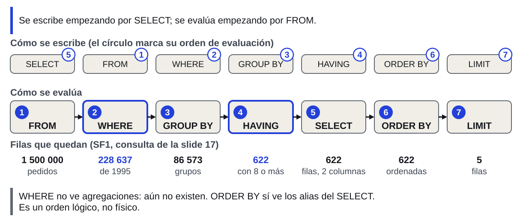
Orden lógico, no físico: el optimizador puede reordenar si el resultado no cambia.
La consulta se escribe con SELECT primero, pero se razona desde FROM. Sobre la consulta de la slide 17: FROM parte de 1 500 000 pedidos; WHERE deja 228 637; GROUP BY forma 86 573 grupos (uno por cliente); HAVING deja 622; SELECT elige las dos columnas; ORDER BY ordena; LIMIT conserva 5 (consulta propia, Snowflake, 3 nov. 2026). Consecuencias: WHERE no ve agregaciones porque todavía no existen; ORDER BY sí ve los alias del SELECT. Snowflake admite además alias del SELECT en WHERE y GROUP BY, como extensión (no es SQL estándar); en los labs no se usa. En el Lab 2, FROM también incorpora las uniones (JOIN). Es un orden lógico: el optimizador puede ejecutar los pasos de otra forma, siempre que el resultado sea el mismo. Siguiente: qué le pasa a un resumen cuando FROM une tablas.
JOIN va dentro de FROM: unir pedidos con líneas repite cada pedido y multiplica la suma por 5
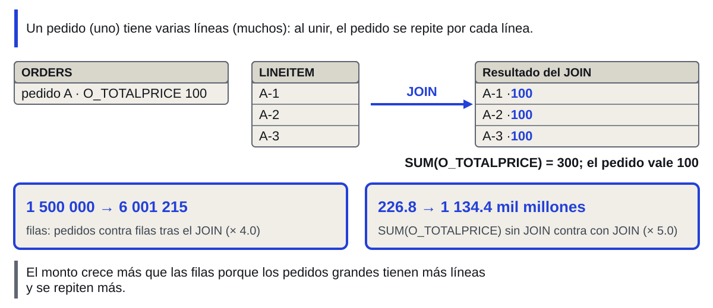
INNER: solo parejas; LEFT: todas las de la izquierda (50 004 clientes sin pedidos).
Pantalla: 1 500 000 → 6 001 215 filas es 4.0 veces más; la suma se multiplica por 5.0; las cifras de la suma están en «mil millones» sin moneda, porque TPC-H no define moneda. Definición de JOIN (antes slide 42; título: «JOIN combina filas de dos tablas por una condición: INNER conserva solo las parejas; LEFT, todas las de la izquierda»; pie: «En SF1, 50 004 clientes no tienen pedidos»; el diagrama D12 del deck de 64 no se proyecta). La condición ON dice qué filas son pareja: C_CUSTKEY = O_CUSTKEY. INNER JOIN devuelve solo las parejas; LEFT JOIN devuelve además las filas de la izquierda sin pareja, con NULL en las columnas de la derecha. En SF1, 50 004 de 150 000 clientes no tienen ningún pedido (consulta propia, Snowflake, 3 nov. 2026): un INNER JOIN los pierde sin avisar. Para encontrarlos: LEFT JOIN y WHERE columna_de_la_derecha IS NULL (EJ9). Las filas del diagrama son un ejemplo ilustrativo con claves simplificadas. El JOIN que duplica (antes slide 43; pie original: «SUM(O_TOTALPRICE), SF1: 226.8 contra 1 134.4 mil millones», que D13 ya trae). Demo 11 del guion de demos, en SF1: ORDERS tiene 1 500 000 filas; ORDERS unido a LINEITEM devuelve 6 001 215, una por línea, con 1 500 000 pedidos distintos (consulta propia, Snowflake, 3 nov. 2026). SUM(O_TOTALPRICE) pasa de 226 829 306 447.46 a 1 134 436 101 880.19: 5.0 veces. Las filas crecen 4.0 veces y el monto 5.0, porque los pedidos grandes tienen más líneas y se repiten más (consulta propia, Snowflake, 3 nov. 2026). El total inflado no da error: parece un resultado válido. Se detecta comparando el conteo antes y después de unir. Tiempo: 3 de definición de JOIN y 3.5 de la duplicación. Siguiente: la regla que dice cuándo un JOIN multiplica.
La cardinalidad, filas de una por fila de la otra, decide si el JOIN multiplica
Apertura del Lab 2 (antes slide 41; pregunta: ¿qué le pasa a un total cuando unes tablas de distinta cardinalidad?). La cardinalidad es cuántas filas de una tabla corresponden a una fila de la otra. La tercera unión es por PARTKEY, y es la de la slide 26 (SF10). El Lab 2 pide agregar y unir, y trae un ejercicio que reproduce a propósito el error de duplicar filas y otro que lo corrige. Se usa solo GROUP BY, HAVING, agregaciones e INNER o LEFT JOIN; las subconsultas y las CTE son de la clase 3. Regla (antes slide 44; título: «Si la clave es única en un lado, el JOIN devuelve una fila por cada fila del otro; si se repite en ambos, multiplica»; relaciones: ORDERS y CUSTOMER, N:1; ORDERS y LINEITEM, 1:N). Antes de unir se declara el grano de cada lado (clase 1, slide 23): qué representa una fila. Unir de muchos a uno (cada pedido tiene un cliente, y cada cliente una nación) conserva las filas del lado «muchos». Unir de uno a muchos (cada pedido tiene varias líneas) las multiplica y repite las medidas del lado «uno». Si la clave se repite en los dos lados, aparece cada pareja de filas con la misma clave: el número de filas es el producto de las repeticiones. Dos salidas sin subconsultas: contar claves distintas con COUNT(DISTINCT) y sumar la medida de línea, L_EXTENDEDPRICE*(1-L_DISCOUNT)*(1+L_TAX), que iguala SUM(O_TOTALPRICE) salvo 0.00002 % (medición propia, Snowflake, nov. 2026); L_EXTENDEDPRICE sin descuento ni impuesto queda 1.21 % por encima del total. La tercera salida, agregar antes de unir, necesita una subconsulta o una CTE: clase 3. Tercera fila: LINEITEM y PARTSUPP por PARTKEY es la unión con llave incompleta que se mide en la slide 26 (PARTSUPP, la tabla de proveedores de cada pieza, tiene 4 proveedores por pieza). Cifras de la columna Filas: 1.5 M de pedidos pasan a 6.0 M al unir con LINEITEM (SF1); 60.0 M de líneas pasan a 239.9 M al unir con PARTSUPP solo por PARTKEY (SF10). Tiempo: 0.5 de apertura y 3 de la regla. Siguiente: el Lab 2, que pone esta regla en práctica.
Lab 2: la cardinalidad, meta 6 de 6
EJ7 y EJ8 (★★): duplicación y corrección.
COUNT(DISTINCT) cuenta cada clave una vez: AUTOMOBILE 297 453 filas, 19 876 clientes.
lab2_verificacion.sql, Run All.
Paso 0: crea el esquema CURSO.LAB2. ★ marca el nivel: ★ básico, ★★ intermedio, ★★★ avanzado. Tiempo (27 min): 3 de COUNT(DISTINCT) y 24 de trabajo individual; esta slide queda proyectada. COUNT(DISTINCT) (antes slide 45; título: «COUNT(DISTINCT) cuenta cada clave una vez aunque el JOIN la repita; agregar antes de unir llega en la clase 3»). Demo 12, SF1: SELECT C.C_MKTSEGMENT, COUNT(*) AS FILAS, COUNT(DISTINCT C.C_CUSTKEY) AS CLIENTES FROM SNOWFLAKE_SAMPLE_DATA.TPCH_SF1.CUSTOMER C JOIN SNOWFLAKE_SAMPLE_DATA.TPCH_SF1.ORDERS O ON C.C_CUSTKEY = O.O_CUSTKEY GROUP BY C.C_MKTSEGMENT; AUTOMOBILE 297 453 filas y 19 876 clientes, BUILDING 303 959 y 20 177, FURNITURE 299 461 y 19 966, HOUSEHOLD 300 147 y 20 028, MACHINERY 298 980 y 19 949 (consulta propia, Snowflake, 3 nov. 2026). COUNT(*) cuenta las filas del resultado del JOIN (pedidos); COUNT(DISTINCT C.C_CUSTKEY) cuenta clientes. La segunda salida es el EJ8 del Lab 2: contar PEDIDOS con COUNT(DISTINCT O_ORDERKEY) y sumar la medida de línea L_EXTENDEDPRICE*(1-L_DISCOUNT)*(1+L_TAX) en lugar de O_TOTALPRICE. Los alias C y O abrevian los nombres de las tablas. INNER JOIN, LEFT JOIN y COUNT(DISTINCT) están definidos en el glosario y en los ejercicios de lab2.sql. Esta slide queda proyectada. El procedimiento es el mismo del Lab 1 (slide 15): copiar desde GitHub, pegar en una hoja y correr el Paso 0, que ahora crea el esquema CURSO.LAB2. Orden: primero los ★; EJ7 y EJ8 son la pareja «error y corrección» y conviene hacerlos juntos; EJ9 (★★) y EJ10 (★★★) son opcionales. El instructor recuerda, a los 18 minutos de trabajo, correr la verificación. Es realista que parte del grupo no llegue a EJ7 y EJ8 (★★); la slide 26 se apoya en la slide 19, no en EJ7. Siguiente: cuánto leyó cada consulta, con el Query Profile.
Tras preguntar, se mide: el Query Profile es el plan ejecutado
Apaga la caché de resultados (reutiliza consultas idénticas): ALTER SESSION SET USE_CACHED_RESULT = FALSE;
Ejecuta; Query Details > tres puntos > View Query Profile.
Otra hoja: Monitoring > Query History.
Apertura (antes slide 47; pregunta: ¿qué evidencia deja cada consulta y qué decisión permite tomar?). El Query Profile es el plan de ejecución real de una consulta ya ejecutada: qué operadores corrió el motor, cuántas filas pasaron entre ellos, cuánto leyó y dónde se fue el tiempo. Es la evidencia que convierte «está lenta» en una causa y una decisión. Dejan huella en él las columnas, el pruning, la escala y el costo (incluida la caché); el aislamiento, los crudos y los formatos no. Esta sección enseña a encontrar esa huella. Cómo abrirlo (antes slide 48; el paso 4 era SQL: `SELECT * FROM TABLE(GET_QUERY_OPERATOR_STATS(LAST_QUERY_ID()));`). Si el resultado sale de la caché de resultados, el perfil muestra un solo nodo y no hay nada que leer: por eso el primer paso desactiva la caché y la consulta se ejecuta después. La caché de resultados se mostró en la demo 7 (notas de la slide 11). Ruta completa: en el panel de resultados, Query Details > botón de tres puntos > View Query Profile; o Monitoring > Query History > consulta > pestaña Query Profile. La ruta por Query History sirve para consultas de otra hoja o de otra persona con el rol adecuado. `SELECT * FROM TABLE(GET_QUERY_OPERATOR_STATS(LAST_QUERY_ID()))` devuelve lo mismo en filas: un operador por fila, con sus estadísticas en JSON; es la forma de guardar evidencia en una tabla o en un informe. Tiempo: 2.5 min. Siguiente: cómo se lee lo que muestra el perfil.
Cada operador es un paso del plan; el árbol muestra su tiempo y sus filas
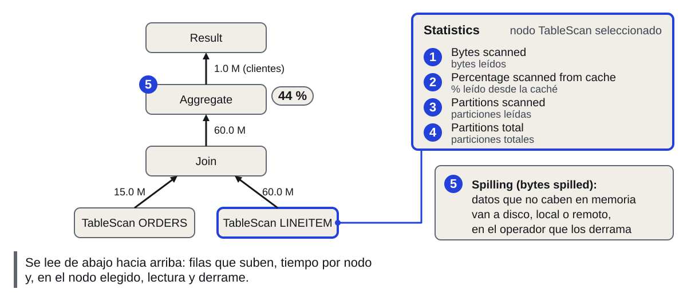
Árbol de unir y agregar (SF10): Aggregate, 44 % del tiempo. Aggregate agrupa; Sort ordena.
Consulta del árbol (caso 5 del informe de Query Profile, SF10, versión «antes»: unir LINEITEM con ORDERS y luego agregar por cliente): el Join entrega 59 986 052 filas y el Aggregate es el operador más costoso, con 44.32 % del tiempo (medición propia, Snowflake, nov. 2026). Rótulos del panel, en inglés tal como salen en Snowsight, con su traducción en el diagrama. Spilling: datos que no caben en memoria y se escriben a disco. Título del deck de 64: «El perfil es un árbol de operadores: los datos suben desde TableScan y cada nodo muestra su tiempo y sus filas». Aquí el título define operador; pie del deck de 64: «Aggregate agrupa; Sort ordena; WindowFunction calcula sobre ventanas de filas». Spilling se define en esta slide porque el panel del diagrama lo muestra (bytes spilled). Se lee de abajo hacia arriba. Aggregate es el operador de GROUP BY y de las funciones de agregación; Sort, el de ORDER BY; WindowFunction, el de las funciones de ventana (OVER), que se enseñan en la clase 3. Flecha: filas que pasan al nodo siguiente. Nodo: porcentaje del tiempo. TableScan: bytes y particiones. Cada caja es un operador (TableScan, Filter, Join, Aggregate, Sort, WindowFunction, Result) con su porcentaje del tiempo de ejecución; cada flecha, las filas que pasan al siguiente. Panel derecho, al seleccionar un nodo: Bytes scanned, Percentage scanned from cache, Partitions scanned y Partitions total, Bytes spilled to local storage y to remote storage. Arriba a la derecha, Most Expensive Nodes. En nuestra medición, `BYTES_SCANNED` de QUERY_HISTORY no respondió: dio 1.72 GB en `SELECT *` y en tres columnas, y 0 en otro caso, mientras el TableScan dio 1.72 frente a 0.45 GB (medición propia, Snowflake, nov. 2026). Para comparar variantes se usa el operador. Siguiente: qué hacer con cada síntoma que muestra el árbol.
Leído el árbol, cada síntoma apunta a una causa y a una decisión distinta
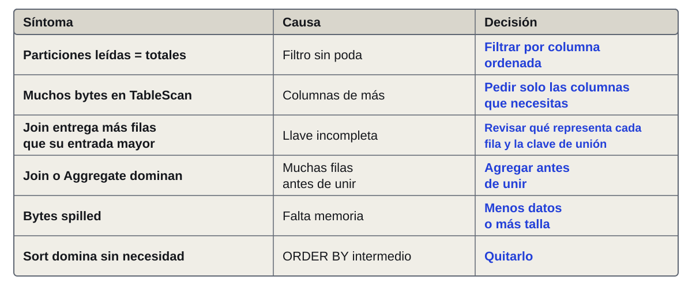
Pedir 3 columnas: 0.45 GB frente a 1.72 GB y 5 veces menos tiempo; mismas 116 particiones.
La tabla es la guía de diagnóstico. Las tres slides siguientes (25 a 27) muestran tres filas con mediciones del curso, y la proyección de columnas se mide en esta slide. Agregar antes de unir (medición propia, Snowflake, nov. 2026): el Join pasa de 59 986 052 a 15 000 000 filas con el mismo resultado (999 982 clientes); se escribe con subconsulta o CTE, clase 3. El tiempo de ejecución no bajó (1.01 frente a 1.23 s); el total sí (4.1 frente a 2.1 s), pero esa diferencia es compilación o cola: es el ejemplo del último síntoma. ORDER BY intermedio (medición propia, Snowflake, nov. 2026): un ORDER BY dentro de una CTE sin LIMIT produjo un Sort con 92 % del tiempo, 1.59 s contra 0.25 s; también clase 3. Hay un síntoma que no está en el árbol: si el tiempo total es mucho mayor que el de ejecución, la consulta esperó (compilación o cola), y el remedio no es reescribirla. Causas: particiones = totales, el filtro no poda porque la columna no está agrupada; bytes altos, columnas de más; Join multiplica, llave incompleta (más filas que su entrada mayor); Join o Aggregate dominan, muchas filas antes de unir; spilling, falta memoria (también se resuelve leyendo menos datos); Sort, ORDER BY intermedio sin LIMIT. Proyección de columnas (antes slide 51; título: «Proyectar 3 columnas lee 4 veces menos y tarda 5 veces menos, con iguales particiones»). LINEITEM SF10, 1995, segunda ejecución: SELECT * lee 1.72 GB, 116 de 116 particiones y tarda 1.46 s; 3 columnas leen 0.45 GB, 116 de 116 y tardan 0.29 s (medición propia, Snowflake, nov. 2026). Misma consulta con filtro de 1995 sobre L_SHIPDATE, envuelta en HASH_AGG(*) para obligar a leer cada columna proyectada sin transferir filas. Bytes del TableScan: 1 720 348 768 frente a 445 726 720; segunda ejecución de cada variante. Es el problema 1 del bloque 2 (columnar, slide 6) visto en el perfil: las particiones no cambian porque la poda no depende de las columnas. Decisión en un pipeline: `SELECT *` en una capa silver o gold que alimenta tableros multiplica este costo en cada ejecución. Pie del deck de 64: «Las cuatro slides siguientes miden cuatro de estas filas»; aquí las tres slides siguientes (25 a 27) miden tres, y la cuarta, proyección, va en el pie. Tiempo: 3 de la tabla y 1 de la proyección.
El pruning depende del orden de filas: en SF100, YEAR() podó igual que el rango
YEAR(L_SHIPDATE) o rango 1995
(Re-medición propia, Snowflake, SF100 y SF10, nov. 2026.) Con `YEAR()` y con rango, el mismo 171 de 1 022 (0.34 y 0.33 GB): en esta medición YEAR() no impidió la poda; la documentación no lo garantiza para toda función. Otras expresiones (una UDF, operaciones sobre texto, combinar columnas) sí pueden impedir la poda. La regla «evita funciones sobre la columna filtrada» sigue siendo prudente, y el perfil dice si aplica. L_QUANTITY = 10: 1 022 de 1 022 y 2.40 GB, consistente con que cada partición contiene valores de 1 a 50. En SF10 la misma fecha no poda: SYSTEM$CLUSTERING_INFORMATION da profundidad media 116 sobre 116 particiones; es decir, cada partición contiene casi todo el rango de fechas. El filtro es igual; lo que cambia es la disposición física. Decisión: si una tabla grande se filtra siempre por una columna, hay que cargarla ordenada por esa columna o definir una clustering key, que tiene costo de reclustering en créditos. Filas completas medidas: YEAR(L_SHIPDATE) = 1995 en SF100, 171 de 1 022; L_SHIPDATE en rango 1995 en SF100, 171 de 1 022; L_QUANTITY = 10 en SF100, 1 022 de 1 022; L_SHIPDATE en rango 1995 en SF10, 116 de 116. Siguiente: el segundo síntoma, un Join que multiplica filas. Esta slide muestra la fila 1 de la tabla de la slide 24 (particiones leídas = totales). Verbo único del deck: «podar» (omitir las micro-particiones que el filtro descarta, definido en la slide 7).
Unir por llave incompleta multiplica las filas por 4 sin error: el Join lo delata
LINEITEM con PARTSUPP (4 proveedores por pieza), SF10
(Medición propia, Snowflake, nov. 2026.) PARTSUPP es la tabla que relaciona cada pieza con sus proveedores: cuatro por pieza; la llave de PARTSUPP es la pareja (PS_PARTKEY, PS_SUPPKEY). Con una sola llave, cada línea se empareja con 4 filas: 239 944 208 contra 59 986 052. Es la misma multiplicación de la slide 19, ahora por una llave compuesta incompleta (N:M), vista en el perfil: el número de filas sobre la flecha que sale del Join es 4 veces el de la que entra desde LINEITEM. El tiempo apenas sube 1.6 veces; el indicador confiable es la cardinalidad, no el reloj. Fila retirada de pantalla: Tiempo, 1.42 s con una llave y 0.87 s con las dos. La fila «Join: % del tiempo total» es el porcentaje del tiempo de la consulta que ocupa el nodo Join (89 % con una llave y 63 % con las dos). Esta slide es la fila 3 de la tabla de la slide 24. Siguiente: el tercer síntoma, spilling.
Si hay spilling, Medium lo hizo 4.4 veces más rápido, casi al mismo costo
Ventana sobre 600 M filas
Bytes spilled local (a disco)
Créditos (sin mínimo de 60 s)
(Medición propia, Snowflake, nov. 2026.) ROW_NUMBER() OVER (PARTITION BY L_ORDERKEY ORDER BY L_EXTENDEDPRICE) sobre LINEITEM SF100, agregado a una fila. Spilling: cuando la memoria del warehouse no alcanza, el operador escribe resultados intermedios a disco local y, si tampoco alcanza, a almacenamiento remoto, mucho más lento. En X-Small, el nodo WindowFunction (60 % del tiempo) derramó 4.73 GB; en Medium, nada. Costo: X-Small 1 crédito por hora × 48.4 s = 0.0134 créditos; Medium 4 créditos por hora × 11.0 s = 0.0122. Condiciones: una sola ejecución y warehouse ya encendido; con Medium recién encendido se cobra el mínimo de 60 s (slide 11), 0.0667 créditos. La diferencia de 9 % está dentro de la variación entre ejecuciones; se lee como «mismo costo, 4.4 veces menos tiempo». Es una sola ejecución. Los créditos no incluyen el mínimo de 60 s por arranque. Medium está dos tallas por encima de X-Small. Esta slide es la fila 5 de la tabla de la slide 24. Contraste con la slide 11: aquí X-Small pierde tiempo escribiendo a disco; allí no había spilling. sin spilling, Medium fue 1.45 veces más rápido y costó 2.8 veces más. La talla se elige con evidencia del perfil, no por costumbre. Las funciones de ventana se enseñan en la clase 3. Siguiente: el mini-caso, que aplica todo el bloque.
Mini-caso de una dirección comercial: hoy, Q1 y Q4 sobre SF10
Q1: ventas por región, 1995.
Q4: importe por envío y región.
caso_verificacion.sql: Run All.
Q4 en OK: abre su Query Profile.
Las cuatro preguntas del caso: Q1 ventas por región en 1995; Q2 naciones con más de 600 000 pedidos; Q3 clientes por región sin compras; Q4 modo de envío con más importe por región. Q2 y Q3 quedan para después de clase con la misma verificación. Pasos del trabajo (no caben en pantalla): copia caso.sql y corre su Paso 0; escribe Q1 y Q4; corre caso_verificacion.sql con Run All; con Q4 en OK, abre su perfil. Hoy: Q1, Q4 y el perfil de Q4; Q2 y Q3 después de clase. Q2 y Q3 no necesitan subconsultas: usan HAVING y LEFT JOIN. Puente desde la slide 27: la talla del warehouse se elige con evidencia del perfil; el mini-caso la practica. Tiempo (11.5 min): 2.5 de presentación del caso y las vistas y 9 de trabajo individual; esta slide queda proyectada. Planteamiento (antes slide 55; pregunta: ¿qué le contestas a la dirección comercial del mayorista, y cuánto cuesta leer cada respuesta?; pista: TPC-H SF10, cuatro consultas, un Query Profile). Cierra los dos hilos de la clase: preguntarle al motor (SQL) y saber cuánto leyó (Query Profile). El mini-caso usa SF10, diez veces más grande que el Lab 2, para que el perfil tenga peso: LINEITEM tiene 59 986 052 filas (consulta propia, Snowflake, 3 nov. 2026). TPC-H es sintético y casi uniforme: las diferencias entre regiones son de décimas de punto; el ejercicio es de lectura de consultas y de perfil, no de hallazgos de negocio. Vistas (antes slide 56; título: «Cuatro preguntas de negocio, cuatro vistas con columnas fijas»). Las columnas de salida de cada vista están en el archivo del caso: Q1 REGION, PEDIDOS, MONTO_TOTAL; Q2 NACION, PEDIDOS, MONTO_TOTAL; Q3 REGION, CLIENTES_SIN_PEDIDOS; Q4 REGION, MODO_ENVIO, LINEAS, IMPORTE_LINEAS. Cada una usa una pieza del día: Q1, filtro de fecha y tres uniones; Q2, HAVING; Q3, LEFT JOIN; Q4, cinco tablas. Q4 es la más pesada: une LINEITEM con las otras cuatro. Se advierte que Q4 no pide «el modo máximo por región», porque eso necesita ventanas (clase 3): se ordena y se lee. Trabajo (antes slide 57; pasos: copia caso.sql y corre su Paso 0; escribe Q1 y Q4, Q2 y Q3 después de clase; corre caso_verificacion.sql con Run All; con Q4 en OK, abre su perfil). Trabajo individual con la misma mecánica de los labs. Tiempo de trabajo: 9 minutos. Q1 y Q4 son obligatorias (Q4 alimenta la slide 29); Q2 y Q3 quedan para después de clase, con la misma verificación. Quien no termina Q2 o Q3 puede leer el perfil de Q1 o Q4: la lectura es lo que se discute. El instructor circula; la verificación cubre solo las vistas, no la lectura del perfil. Con la tabla de diagnóstico de la slide 24 a la mano, cada estudiante clasifica lo que ve. Siguiente: el perfil de Q4.
Sin filtro, Q4 lee 116 de 116 micro-particiones: LINEITEM entera, 0.39 GB
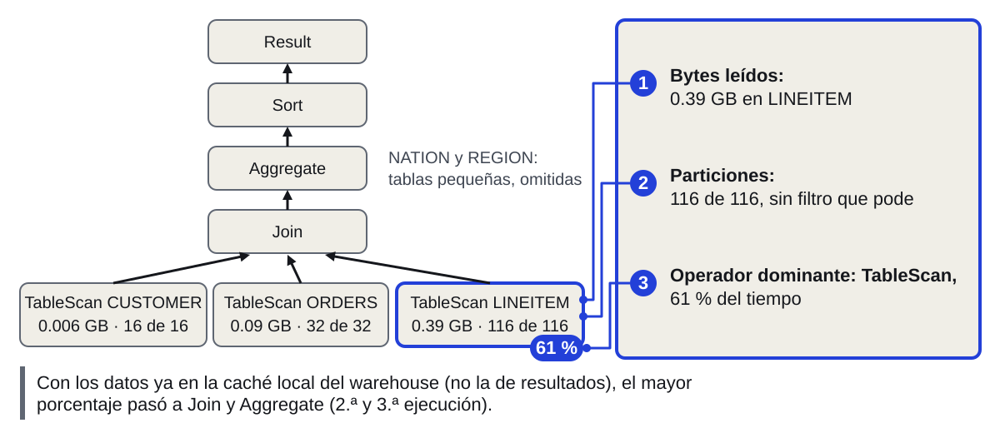
Q4, SF10, X-Small, primera ejecución, en frío: domina TableScan. ¿Qué cambiarías para que lea menos?
Tiempo (6.5 min): 2.5 del perfil, 2.5 de la comparación con Q1 y 1.5 de decisión. Título del deck de 64: «El Query Profile de la consulta más pesada muestra tres datos: bytes leídos, particiones y el operador que más tarda». Q4 en SF10 (consulta propia, Snowflake, 3 nov. 2026; primera ejecución, X-Small, 5.69 s): el TableScan de LINEITEM leyó 393 581 216 bytes (0.39 GB) y 116 de 116 micro-particiones; el de ORDERS, 91 621 504 bytes y 32 de 32; el de CUSTOMER, 5 546 752 y 16 de 16. El diagrama dibuja tres TableScan: NATION y REGION son tablas pequeñas y se omiten. Sin WHERE no hay nada que podar: se lee todo lo que se une. El operador que más tardó fue el TableScan de LINEITEM (60.6 % del tiempo). En la segunda y la tercera ejecución, con los datos ya en la caché del warehouse, dominaron Aggregate y Join (31.7 % y 26.8 %; 30.5 % y 31.4 %) y el TableScan bajó a 8.9 % y 6.7 % (consulta propia, Snowflake, 3 nov. 2026). El perfil enseña que el operador dominante depende de si el dato estaba en la caché del warehouse. Son dos cachés distintas: la del warehouse (caché local, datos en el disco de sus nodos, se pierde al suspender) y la de resultados (slide 11, reutiliza la respuesta de una consulta idéntica). Para releer el perfil de una consulta ya ejecutada, `ALTER SESSION SET USE_CACHED_RESULT = FALSE;` antes de volver a correrla. Comparación (antes slide 59; título: «Q1 filtra un año y no poda en SF10; Q4 une cinco tablas y lee todo lo que une»; Q1, tabla mayor ORDERS, 0.11 GB, 32 de 32; Q4, tabla mayor LINEITEM, 0.39 GB, 116 de 116). Q1 en SF10 (consulta propia, Snowflake, 3 nov. 2026): el filtro O_ORDERDATE de 1995 no podó nada: 32 de 32 micro-particiones y 112 826 368 bytes en el TableScan de ORDERS, que además fue el nodo con 88.1 % del tiempo en esa ejecución. Un año es aproximadamente 1/7 del rango de fechas de pedidos, y aun así no hubo pruning. En SF1000, en cambio, ORDERS está agrupado por O_ORDERDATE (profundidad media 1.84) y un mes lee 43 de 3 242 micro-particiones (medición propia, Snowflake, nov. 2026); y L_SHIPDATE poda en LINEITEM: un mes lee 134 de 10 336. En SF10, SYSTEM$CLUSTERING_INFORMATION de LINEITEM por L_SHIPDATE da profundidad media 116 sobre 116 particiones (medición propia, Snowflake, nov. 2026), y ORDERS por O_ORDERDATE, profundidad 32 sobre 32 (consulta propia, Snowflake, 4 nov. 2026): en SF10 ninguna de las dos tablas está ordenada por fecha; por eso Q1 no poda. Lo que sí se sostiene: un filtro poda solo si la columna está agrupada; Q4 no tiene filtro, así que lee todo lo que une. Q4 une cinco tablas (LINEITEM, ORDERS, CUSTOMER, NATION y REGION); la tabla muestra la mayor de cada consulta, y NATION y REGION, por pequeñas, se omiten. Los números de los estudiantes variarán: se comparan órdenes de magnitud y la presencia o ausencia de pruning. Decisión (antes slide 60; pregunta completa: ¿qué cambiarías en Q4 para que lea menos, y qué no cambiaría el tamaño del warehouse?; pista: bytes, particiones y operador dominante). Discusión de 1.5 minutos. Respuestas esperadas: acotar con un filtro sobre una columna agrupada (en SF10, L_SHIPDATE no poda, 116 de 116; L_ORDERKEY sí: 4 de 116 con un rango de 1.2 M de claves y 19 de 116 con L_ORDERKEY < 6 000 000 (medición propia, Snowflake, nov. 2026)), leer menos columnas, agregar antes de unir (clase 3) o guardar el resultado de una consulta que se repite (caché de resultados). Lo que no cambia con la talla: el volumen que hay que leer, como se vio en la slide 11. Se evalúa que cada propuesta cite un dato del perfil, no una opinión. La respuesta se clasifica con la tabla de la slide 24. Siguiente: la respuesta general, leer menos.
Leer rápido es leer menos: columnas, particiones, caché
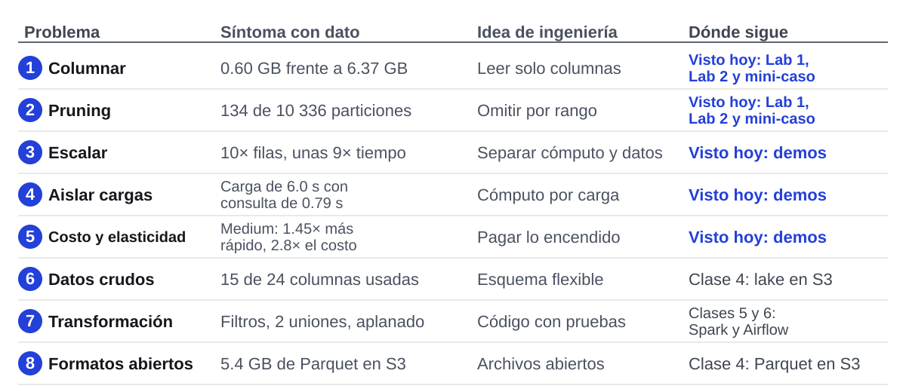
600 M de valores en 0.6 s: una columna comprimida (1.83 GB), 1 022 micro-particiones en paralelo. Clases 4 a 6: 239.5 M viajes.
Mismo mapa de la slide 5, con una columna extra: dónde continúa cada problema en el curso. Columnar, pruning, escala, aislamiento y costo se resolvieron hoy con el motor. Crudos y formatos abiertos pasan a la clase 4 (lake en S3); transformación, a las clases 5 y 6 (Spark, Airflow y Glue). Respuesta a la pregunta de la slide 3: 600 M de valores en 0.6 s, porque se lee una sola columna comprimida (1.83 GB), repartida en 1 022 micro-particiones que se procesan en paralelo; en esa consulta no hubo pruning. La consulta decide cuánto de eso se aprovecha. Vuelta al caso: los 239.5 M de viajes de NYC se leerán con estos mismos principios (leer solo las columnas que se usan y filtrar por fecha sobre particiones) en las clases 4 a 6; la clase 3 sigue con SQL avanzado y la 4 con el lake y la carga a Snowflake. Clase 3 (antes slide 62; título: «La clase 3 agrega subconsultas, CTE y funciones de ventana, y abre el modelado dimensional»; Hoy contra Clase 3: JOIN que duplica, agregar antes de unir; GROUP BY y HAVING, subconsultas y CTE; un total por grupo, funciones de ventana; TPC-H, modelo dimensional). La clase 3 es el lunes 9 de noviembre: SQL avanzado y modelado dimensional (clase 1, slide 1B). Resuelve lo que hoy quedó señalado: agregar antes de unir (Q4 y el EJ8), el «modo máximo por región» que no se pudo pedir y el modelo estrella sobre los viajes de NYC. El Taller 1 se lanza el 10 de noviembre y se entrega el 15 (clase 1, slide 1C). Los labs 1 y 2 y el mini-caso quedan abiertos para terminarlos; las verificaciones se pueden correr cuantas veces se quiera. Tiempo (10 min): 5 de cierre y clase 3; 5 para quien tiene las cuotas aprobadas y lanza el bootstrap (pasos 4.1 y 4.2 en las notas de la slide 14); el instructor proyecta docs/guia.md en el paso 4.1. Clase 3, que ya no va en el pie: subconsultas, CTE, funciones de ventana y modelo dimensional. En el mapa, «Visto hoy» marca lo que se resolvió o se vio hoy.